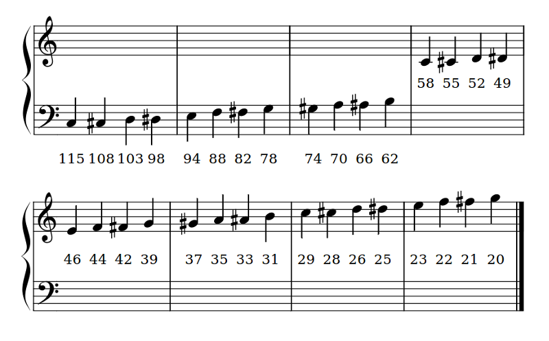

Reč¶
Varovanie
VAROVANIE! TENTO KÓD SA MÔŽE ZMENIŤ.
Vyhradzujeme si právo zmeniť toto API počas vývoja.
Kvalita reči nie je veľmi vysoká, skôr „taká akurát“. Vzhľadom na limity zariadenia možno narazíš na chyby pamäte a/alebo neočakávané zvuky počas prehrávania. Vývoj je ešte na začiatku a stále zlepšujeme kód rečového syntetizátora. Oznamovanie chýb a opravy formou pull requestov sú vítané.
Počítače a roboti, ktorí hovoria, vyzerajú „ľudskejšie“.
Často si hovoríme, čo chce počítač robiť prostredníctvom grafického rozhrania (GUI). V prípade BBC micro:bitu je týmto rozhraním LED matica s rozmerom 5x5, čo nedáva toľko možností, koľko by sme chceli.
Donútiť micro:bit rozprávať je jedným zo spôsobov, ako vyjadriť informáciu vtipne, efektívne a užitočne. Integrovali sme jednoduchý rečový syntetizátor založený na revernom inžinierstve syntetizéra z 80-tych rokov minulého storočia. Znie to veľmi milo, takým tým „všetci ľudia musia umrieť“ spôsobom.
S týmto na pamäti, použijeme rečový syntetizátor na vytvorenie…
DALEKova poézia¶

Nie je to veľmi známy fakt, ale DALEKovia majú radi poéziu ~ najmä rýmovačky limerick. Idú sa zblázniť za anapestickou metrikou striktnej AABBA formy. Kto by si to o nich bol pomyslel?
(No, ako sa dozvieme neskôr, je to Doktorova chyba, že DALEKovia majú radi rýmovačky, čo dosť štve Davrosa.)
Každopádne, ideme vytvoriť recitál DALEKovej poézie na požiadanie.
Povedz niečo¶
Predtým, ako má zariadenie hovoriť, treba naň zapojiť reproduktory:

Najjednoduchšie, ako donútiť zariadenie rozprávať je importovať modul speech (reč) a použiť funkciu say (povedz):
import speech
speech.say("Hello, World")
Hoci toto je vážne milé, rozhodne to ešte nie je pre nás dostatočne DALEKovské, takže musíme zmeniť niektoré parametre, ktoré syntetizátor používa na vytváranie hlasu. Náš rečový syntetizátor je dosť pokročilý, čo sa tohto týka, pretože vieme meniť štyri parametre:
pitch- ako vysoko má hlas znieť (0 = vysoko, 255 = Barry White)speed- ako rýchlo má zariadenie hovoriť (0 = nemožné, 255 = uspávanka)mouth- ako veľmi majú byť zovreté pery pri vyslovovaní (0 = bruchovravecká bábka, 255 = Foghorn Leghorn)throat- how relaxed or tense is the tone of voice (0 = falling apart, 255 = totally chilled)
Spoločne, tieto parametre ovládajú kvalitu zvuku - teda zafarbenie. Úprimne, najlepší tón hlasu dosiahneš tak, že budeš experimentovať a používať vlastný úsudok a nastavenia.
Aby si mohol/mohla upraviť nastavenia, musíš ich poslať ako argumenty funkcie say. Viac podrobností nájdeš v dokumentácii modulu``speech``.
Po troche experimentov sme uznali tento zvuk ako vcelku DALEKovský.
speech.say("I am a DALEK - EXTERMINATE", speed=120, pitch=100, throat=100, mouth=200)
Poézia na požiadanie¶
Keďže sú kyborgovia, DALEKovia používajú svoje robotie schopnosti na tvorbu poézie a vyzerá to, že algoritmus, ktorý používajú, je napísaný v Pythone a vyzerá takto:
# DALEK poetry generator, by The Doctor
import speech
import random
from microbit import sleep
# Randomly select fragments to interpolate into the template.
location = random.choice(["brent", "trent", "kent", "tashkent"])
action = random.choice(["wrapped up", "covered", "sang to", "played games with"])
obj = random.choice(["head", "hand", "dog", "foot"])
prop = random.choice(["in a tent", "with cement", "with some scent",
"that was bent"])
result = random.choice(["it ran off", "it glowed", "it blew up",
"it turned blue"])
attitude = random.choice(["in the park", "like a shark", "for a lark",
"with a bark"])
conclusion = random.choice(["where it went", "its intent", "why it went",
"what it meant"])
# A template of the poem. The {} are replaced by the named fragments.
poem = [
"there was a young man from {}".format(location),
"who {} his {} {}".format(action, obj, prop),
"one night after dark",
"{} {}".format(result, attitude),
"and he never worked out {}".format(conclusion),
"EXTERMINATE",
]
# Loop over each line in the poem and use the speech module to recite it.
for line in poem:
speech.say(line, speed=120, pitch=100, throat=100, mouth=200)
sleep(500)
Ako naznačujú komentáre, je veľmi jednoduchý:
- Pomenované fragmenty (
location,prop,attitudeatď.) sú náhodne generované preddefinované zoznamy možných hodnôt. Všimni si, že používame metódurandom.choicena výber položky zo zoznamu. - Šablóna básne je definovaná ako zoznam strof s „dierami“ (označenými pomocou
{}), do ktorých budeme vkladať pomenované fragmenty pomocou metódyformat. - Nakoniec, Python prechdádza všetky položky zoznamu predpripravených strof a používa
speech.says nastaveniami pre DALEKov hlas na recitovanie básne. Medzi riadky je vložená 500-milisekundová prestávka, pretože aj DALEKovia sa niekedy potrebujú nadýchnuť.
Zaujímavé je, že pôvodné funkcie na poéziu boli napísané Davrosom vo FORTRANe (vhodný jazyk pre DALEKSov, keďže píšeš VŠETKO VEĽKÝMI PÍSMENAMI). Avšak, Doktor sa vrátil v čase presne do bodu medzi tým, kedy Davrosove unit testy prechádzali a chystal nasadenie . V tomto okamihu mohol vložiť interpreter MicroPythonu do DALEKovho operačného systému a vyššie uvedený kód do Dalekovej pamäťovej banky ako Prekvapenie alebo Chyták Pána času.
Fonémy¶
Môžeš si všimnúť, že funkcia say nie vždy preloží presne anglické slová do správneho zvuku. Aby si mal(a) extra citlivú kontrolu nad výstupom, používaj fonémy: základné stavebné bloky zvukov jazyka.
Výhodou používania foném je, že nemusíš presne vedieť, ako sa to píše. Naopak, musíš vedieť, ako to slovo povedať a vyhláskovať ho foneticky.
Kompletný zoznam foném, ktoré rečový syntetizátor pozná sa nachádza v API dokumentácii k rečovému modulu. Alebo ušetri si kopec času posielaním anglických slov funkcii translate. Vráti ti len prvé priblíženie foném, ktoré použije na generovanie zvukového výstupu. Tento výsledok môžeš ďalej ručne upraviť a zlepšiť jeho presnosť, ohýbanie a dôraz (aby znel prirodzenejšie).
Funkcia pronounce (vyslov) sa používa na výstup foném takto:
speech.pronounce("/HEH5EH4EH3EH2EH2EH3EH4EH5EHLP.”)
Ako by si mohol/mohla zlepšiť Doktorov kód na výrobu týchto foném?
Zaspievaj pieseň Micro:bitu¶
Zmenou nastavenia výšky - pitch a zavolaním funkcie sing (spievaj) je možné donútiť zariadenie spievať (i keď zrejme tak skoro nevyhrá Eurovíziu).
Mapovanie výšok (pitch) do hudobných nôt je nižšie:
Funkcia sing (spievaj) vezme fonémy a výšku ako vstupy:
speech.sing("#115DOWWWW")
Všimni si, ako výška, ktorá sa má zaspievať je na začiatku pred fonémou s mriežkou (#). Výška zostane rovnaká aj pre nasledujúce fonémy, kým nebude zadaná nová výška.
Nasledujúci príklad ukazuje ako môžu byť použité všetky tri generujúce funkcie (say, pronounce a sing) na vytvorenie výstupu, ktorý znie ako reč:
import speech
from microbit import sleep
# The say method attempts to convert English into phonemes.
speech.say("I can sing!")
sleep(1000)
speech.say("Listen to me!")
sleep(1000)
# Clearing the throat requires the use of phonemes. Changing
# the pitch and speed also helps create the right effect.
speech.pronounce("AEAE/HAEMM", pitch=200, speed=100) # Ahem
sleep(1000)
# Singing requires a phoneme with an annotated pitch for each syllable.
solfa = [
"#115DOWWWWWW", # Doh
"#103REYYYYYY", # Re
"#94MIYYYYYY", # Mi
"#88FAOAOAOAOR", # Fa
"#78SOHWWWWW", # Soh
"#70LAOAOAOAOR", # La
"#62TIYYYYYY", # Ti
"#58DOWWWWWW", # Doh
]
# Sing the scale ascending in pitch.
song = ''.join(solfa)
speech.sing(song, speed=100)
# Reverse the list of syllables.
solfa.reverse()
song = ''.join(solfa)
# Sing the scale descending in pitch.
speech.sing(song, speed=100)